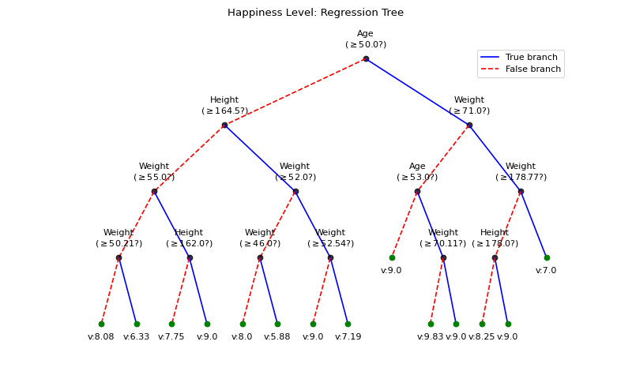

spkit.ml.RegressionTree¶
- class spkit.ml.RegressionTree(min_samples_split=2, min_impurity=1e-07, max_depth=inf, thresholdFromMean=False)¶
Regression Tree
Regression Tree is based on super class
DecisionTreeNote
Decsion Tree Super Class - For more details check
DecisionTreeSee also
Examples
#sp.ml.RegressionTree import numpy as np import pandas as pd import matplotlib.pyplot as plt from spkit.ml import RegressionTree mlend_happiness_dataset = 'https://raw.githubusercontent.com/MLEndDatasets/Happiness/main/MLEndHD_attributes.csv' # check - https://mlenddatasets.github.io/happiness/ data = pd.read_csv(mlend_happiness_dataset) X = data[['Age','Height','Weight']].to_numpy() y = data['HappinessLevel'].to_numpy() X = X[~np.isnan(y)] y = y[~np.isnan(y)] print(X.shape, y.shape) N = X.shape[0] np.random.seed(1) idx = np.arange(N) np.random.shuffle(idx) split = int(N*0.7) X_train, X_test = X[:split], X[split:] y_train, y_test = y[:split], y[split:] print(X_train.shape, y_train.shape, X_test.shape,y_test.shape) model = RegressionTree(max_depth=4) model.fit(X_train,y_train,verbose=0,feature_names=['Age','Height','Weight']) ytp = model.predict(X_train) ysp = model.predict(X_test) print('Depth of trained Tree ', model.getTreeDepth()) print('MSE') print('- Training : ',np.mean((ytp-y_train)**2)) print('- Testing : ',np.mean((ysp-y_test)**2)) print('MAE') print('- Training : ',np.mean(np.abs(ytp-y_train))) print('- Testing : ',np.mean(np.abs(ysp-y_test))) plt.figure(figsize=(10,6)) model.plotTree(show=False,showtitle=False) plt.suptitle('Happiness Level: Regression Tree') plt.show()
 Methods
DictDepth(DT[, n])Get the maximum depth of dictionary
fit(X, y[, verbose, feature_names, randomBranch])Building Regression Tree
getLcurve([Xt, yt, Xs, ys, measure])Getting Learning Curve By supplying Trainign and Testing Data, compute the given measure for each level of depth
getTreeDepth([DT])Get the maximum depth of the tree
get_tree()Extract built tree
plotLcurve([ax, title])Plotting Learning Curve
plotTree([scale, show, showtitle, ...])Plot Decision Tree
plotTreePath(path[, ax, fig])Plotting the path of the tree
predict(X[, max_depth, treePath])Predicting labels
predict_proba(X[, label_counts, max_depth, ...])Predicting probabilties of labels
pruneTree(DT)Prunning the tree
set_featureNames([feature_names])Set Feature names
set_xyNode(DT[, lxy, xy, rxy, ldiff])Setting the xy location of each node
showTree(DT[, DiffBranchColor, ...])Helper function fot plotTree
shrinkTree(DT[, max_depth])Shinking the tree
treeDepth(DT[, mx])Compute the maximum depth of the tree
updateTree([DT, shrink, max_depth])Updating Tree with Shrinking and Pruning
- DictDepth(DT, n=0)¶
Get the maximum depth of dictionary
- fit(X, y, verbose=0, feature_names=None, randomBranch=False)¶
Building Regression Tree
- Parameters:
- X: ndarray
(number of sample, number of features)
- y: list of 1D array
labels
- verbose: int, deafult=0
0 - no progress or tree (silent)
1 - show progress in short
- 2 - show progress with details with branches
3 - show progress with branches True/False
4 - show progress in short with plot tree
- feature_names: list
Provide for better look at tree while plotting or showing the progress,
default to None, if not provided, features are named as f1,…fn
- getLcurve(Xt=None, yt=None, Xs=None, ys=None, measure='acc')¶
Getting Learning Curve By supplying Trainign and Testing Data, compute the given measure for each level of depth
- Parameters:
- Xt, yt: training data
- Xs, ys: testing data
- measure: str, metric
default=’acc’ for accuracy
- Returns:
- Lcurve: dict,
as training and testing measures at each level of depth
- getTreeDepth(DT=None)¶
Get the maximum depth of the tree
- get_tree()¶
Extract built tree
- plotLcurve(ax=None, title=True)¶
Plotting Learning Curve
After computing Learning Curve using
getLcurve, Learnign curve can be plotted- Parameters:
- ax: axis to plot
- title: bool, if to show title
- plotTree(scale=True, show=True, showtitle=True, showDirection=False, DiffBranchColor=True, legend=True, showNodevalues=True, showThreshold=True, hlines=False, Measures=False, dcml=0, leaf_labels=None)¶
Plot Decision Tree
- Parameters:
- scale:
- show:
- showtitle:
- showDirection:
- DiffBranchColor:
- legend:
- showNodevalues:
- showThreshold:
- hlines:
- Measures:
- dcml:
- leaf_labels:
- plotTreePath(path, ax=None, fig=None)¶
Plotting the path of the tree
- predict(X, max_depth=inf, treePath=False)¶
Predicting labels
USE “max_depth” to limit the depth of tree for expected values
Compute expected value for each sample in X, up till depth=max_depth of the tree
For classification: Expected value is a label with maximum probabilty among the samples at leaf nodes. For probability and count of each labels at leaf node, use “.predict_proba” method
For Regression: Expected value is a mean value of smaples at the leaf node. For Standard Deviation and number of samples at leaf node, use “.predict_proba” method
- Parameters:
- X: ndarray
(number of sample, number of features)
- max_depth: int, default=np.inf
maximum depth of the tree to use for the prediction
- treePath: bool, Default=False
if True, path of the tree is also returned, such as ‘TTFTFT…’
- Returns:
- y: list of 1D array
labels
and paths, if
treePathis True
- predict_proba(X, label_counts=False, max_depth=inf, treePath=False)¶
Predicting probabilties of labels
USE “max_depth” to limit the depth of tree for expected values Compute probabilty/SD for labeles at the leaf till max_depth level, for each sample in X
For classification: Returns the Probability of samples one by one and return the set of labels label_counts=True: Includes in the return, the counts of labels at the leaf
For Regression: Returns the standard deviation of values at the leaf node. Mean value is returened with “.predice()” method label_counts=True: Includes in the return, the number of samples at the leaf
treePath=True: Includes the path of tree for each sample as string
- Parameters:
- X: ndarray
(number of sample, number of features)
- max_depth: int, default=np.inf
maximum depth of the tree to use for the prediction
- label_counts: bool, default=False
- If true
count of each class labels are returned (classification)
count of samples at the leaf returned (regression)
- treePath: bool, Default=False
if True, path of the tree is also returned, such as ‘TTFTFT…’
- Returns:
- y_prob: 1D/2D array
labels
- y_counts: count of labels
- y_paths: path of each samples
- pruneTree(DT)¶
Prunning the tree
- Parameters:
- DT: A decision Tree
- Returns:
- DT: Prunned Tree
- set_featureNames(feature_names=None)¶
Set Feature names
- set_xyNode(DT, lxy=[0, 1], xy=[1, 1], rxy=[2, 1], ldiff=1)¶
Setting the xy location of each node
in the tree
- showTree(DT, DiffBranchColor=False, showNodevalues=True, showThreshold=True)¶
Helper function fot plotTree
- shrinkTree(DT, max_depth=inf)¶
Shinking the tree
- Parameters:
- DT: A decision Tree
- max_depth: int
depth, to which tree is to be shrinked
- Returns:
- DT: Shrinked Tree
- treeDepth(DT, mx=0)¶
Compute the maximum depth of the tree
- updateTree(DT=None, shrink=False, max_depth=inf)¶
Updating Tree with Shrinking and Pruning
- Parameters:
- DT: A decision Tree,
if None, root tree self.tree is used
- max_depth: int
depth, to which tree is to be shrinked
- shrink: bool,
if to shrink the tree
- Returns:
- DT: Updated Tree
Examples using spkit.ml.RegressionTree¶

Decision Trees with shrinking capability - Regression example